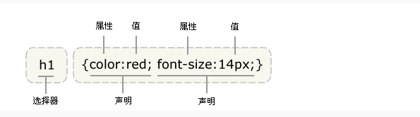
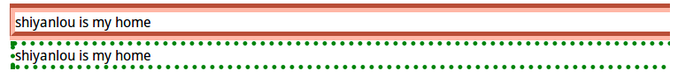
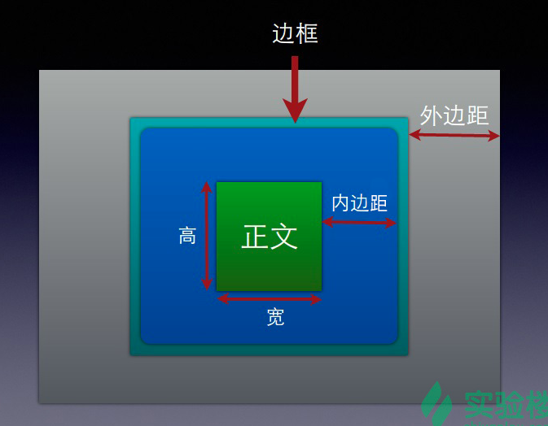
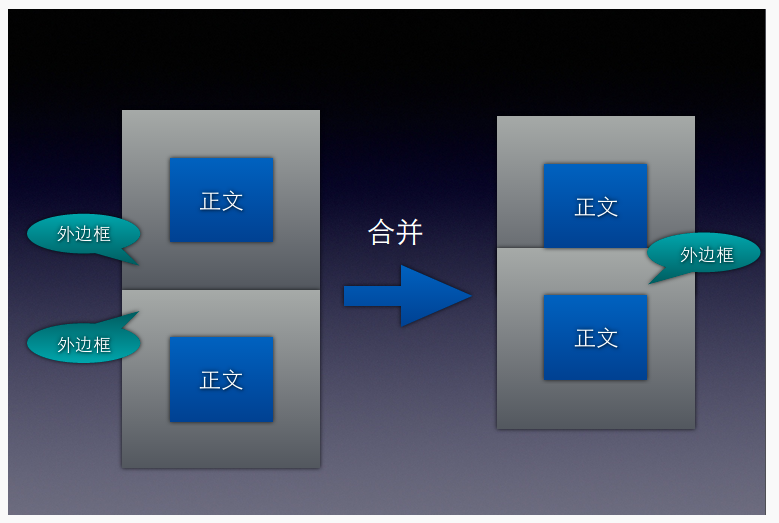
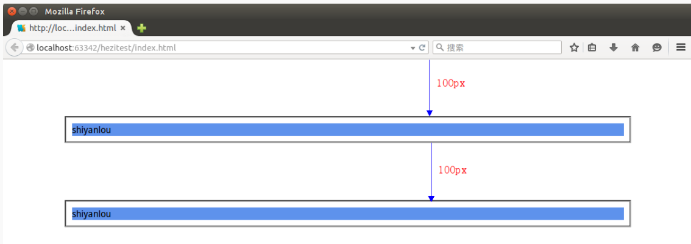
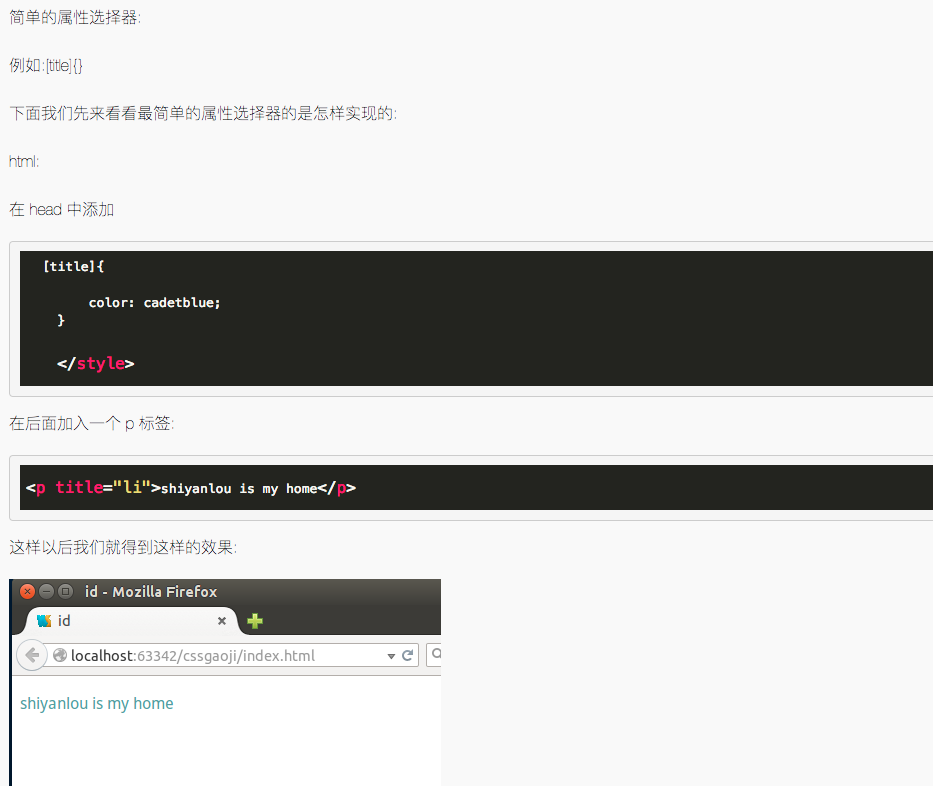
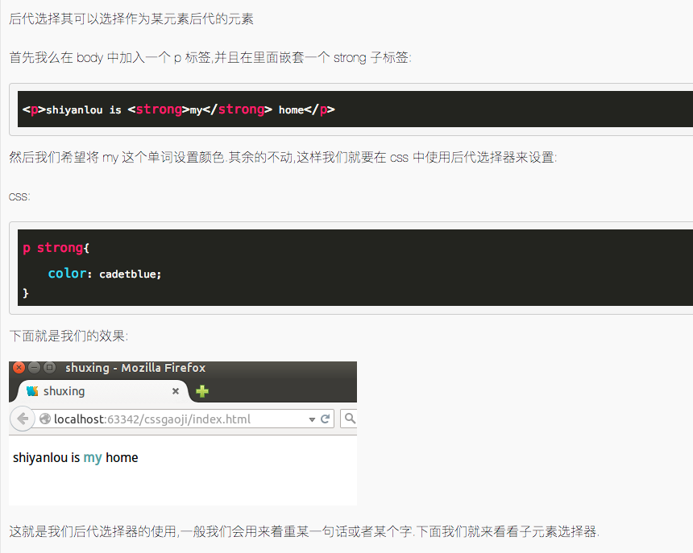
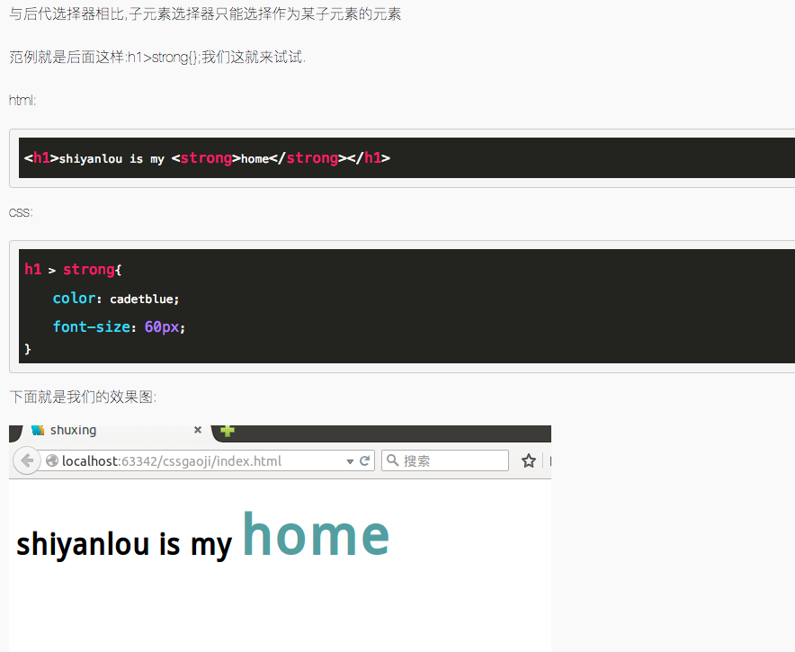
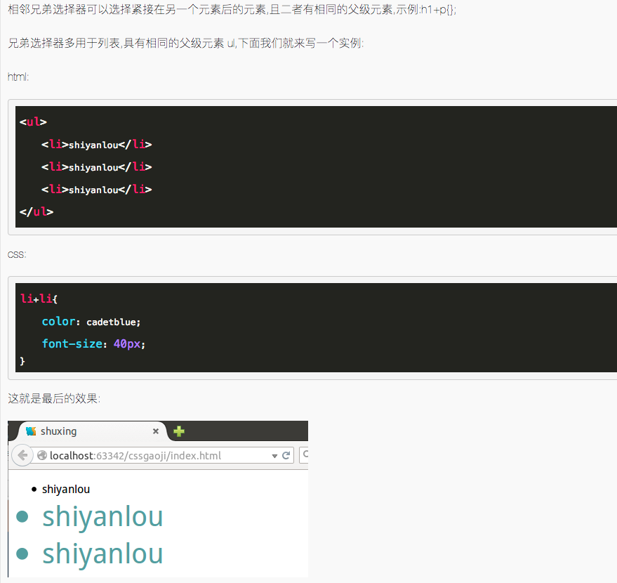

纸上得来终觉浅，绝知此事要躬行。
层叠样式表(CSS)，又称串样式列表、级联样式表、串接样式表、阶层式样式表，是一种用来为结构化文档（如 HTML 文档或 XML 应用）添加样式（字体、间距和颜色等）的计算机语言，由 W3C 定义和维护。目前最新版本是 CSS2.1，为 W3C 的推荐标准。CSS3 现在已被大部分现代浏览器支持，而下一版的 CSS4 仍在开发中。

1. CSS 的基础语法
1.1 CSS 的基础语法
CSS 规则
- 由两个主要的部分构成：选择器，以及一条或多条声明。
- 选择器通常是您需要改变样式的
HTML元素 - 每条声明由一个属性和一个值组成
selector {
declaration1;
declaration2;
...
declarationN;
}
引入方式
<link rel="stylesheet" href="xxx.css" type="text/css" />选择器的分组
- 分组的选择器就可以分享相同的声明
h1，h2，h3，h4，h5，h6{
color：red;
}继承
- 子元素从父元素继承属性
body{
color：green;
}1.2 四种基础选择器
派生选择器
- 通过依据元素在其位置的上下文关系来定义样式，可以使标记更加简洁
# index.html
<!DOCTYPE html>
<html>
<head>
<meta charset="UTF-8" />
<title></title>
<link rel="stylesheet" href="mycss.css" type="text/css" />
</head>
<body>
<p><strong>我是黑色，因为我不在列表当中，所以这个规则对我不起作用</strong></p>
<u1>
<li><strong>我是红色，这是因为 strong 元素位于 li 元素内。</strong></li>
</u1>
</body>
</html>/* mycss.css */
li strong {
color: red;
}id选择器
id选择器可以为标有id的HTML元素指定特定的样式id选择器以“#”来定义
# index.html
<!DOCTYPE html>
<html>
<head>
<meta charset="UTF-8" />
<title></title>
<link href="MyCss.css" type="text/css" rel="stylesheet" />
</head>
<body>
<p id="pid">hello css<a href="www.example.com">example</a></p>
<div id="divid">this is a div</div>
</body>
</html>/* MyCss.css */
#pid a {
color: #00755f;
}
#divid {
color: red;
}类选择器
- 在
CSS中，类选择器以一个点号显示 - 和
id一样，class也可被用作派生选择器
# index.html
<!DOCTYPE html>
<html>
<head>
<meta charset="UTF-8" />
<title></title>
<link href="MyCss.css" type="text/css" rel="stylesheet" />
</head>
<body>
<!--p 标签中嵌套了一个 a 标签，在下面的 css 引用过程中我们可以看到的.pclass a 即为 class 被用作派生选择器-->
<p class="pclass">这是一个 class 显示效果<a href="http://www.shiyanlou.com">效果</a></p>
<div class="divclass">hello div</div>
</body>
</html>/* MyCss.css */
.pclass a {
color: green;
}
.divclass {
color: red;
}属性选择器
# index.html
<!doctype html>
<html>
<head>
<meta charset="UTF-8">
<title></title>
<style type="text/css">
[title]{
color: #00ff14;
}
[title=te]{
color: red;
}
</style>
</head>
<body>
<p title=>属性选择器</p>
<p title="te">属性和值选择器</p>
</body>
</html>2. CSS 基本样式
2.1 CSS 背景
重要属性
| 属性 | 描述 |
|---|---|
background-attachment |
背景图像是否固定或者随着页面的其余部分滚动 |
background-color |
设置元素的背景颜色 |
background-image |
把图片设置为背景 |
background-position |
设置背景图片的起始位置 |
background-repeat |
设置背景图片是否及如何重复 |
CSS3 背景
| 属性 | 描述 |
|---|---|
background-size |
规定背景图片的尺寸 |
background-origin |
规定背景图片的定位区域 |
background-clip |
规定背景的绘制区域 |
实例
/* 背景颜色设置为红色 */
body {
background-color: red;
}
p {
width: 150px;
padding: 10px;
background-color: #0014ff;
}/* 把python.png设置为背景图片 */
body {
background-image: url("python.png");
}/* 把python.png设置为背景图片，但是不平铺 */
body {
background-image: url("python.png");
background-repeat: no-repeat;
}/* 设置图片的起始位置 */
body {
background-image: url("python.png");
background-repeat: no-repeat;
background-position: center top;
}/* 背景关联 */
/* 声明图像相对于可视区是固定的(fixed)，因此不会受到滚动的影响 */
body {
background-image: url("python.png");
background-repeat: no-repeat;
background-attachment: fixed;
}2.2 CSS 文本
重要属性
| 属性 | 描述 |
|---|---|
color |
文本颜色 |
direction |
文本方向 |
line-height |
行高 |
letter-spacing |
字符间距 |
text-align |
对齐元素中的文本 |
text-decoration |
向文本添加修饰 |
text-indent |
缩进元素中文本的首行 |
text-transform |
元素中的字母 |
unicode-bidi |
设置文本方向 |
white-space |
元素中空白的处理方式 |
word-spacing |
字间距 |
实例
/* text-align */
/* 值left、right和center会导致元素中的文本分别左对齐、右对齐和居中 */
/* 西方语言都是从左向右读，所有text-align的默认值是left */
body {
color: red;
text-align: center;
}/* text-indent属性方便地实现文本缩进 */
/* 属性最常见的用途是将段落的首行缩进 */
p {
text-indent: 5em;
}2.3 CSS 链接
CSS链接的四种状态
a:link–普通的、未被访问的链接a:visited–用户已访问的链接a:hover–鼠标指针位于链接的上方a:active–链接被点击的时刻
注意事项
a:hover必须位于a:link和a:visited之后a:active必须位于a:hover之后
# index.html
<!DOCTYPE html>
<html>
<head lang="en">
<meta charset="UTF-8" />
<title>css test</title>
<script src="app.js"></script>
<link rel="stylesheet" type="text/css" href="test.css" />
</head>
<body>
<a href="http://www.shiyanlou.com">shiyanlou</a>
</body>
</html>/* test.css */
/* CSS设置链接颜色 */
/* 未被访问的链接 */
a:link {
color: #ff0000;
}
/* 已被访问的链接 */
a:visited {
color: #00ff00;
}
/* 鼠标指针移动到链接上 */
a:hover {
color: #ff00ff;
}
/* 正在被点击的链接 */
a:active {
color: #0000ff;
}/* test.css */
/* CSS设置链接背景颜色 */
a:link {
background-color: #b2ff99;
}
a:visited {
background-color: #ffff85;
}
a:hover {
background-color: #ff704d;
}
a:active {
background-color: #ff704d;
}2.4 CSS 列表
列表类型
<ul class="circle">
<li>shiyanlou</li>
<li>shiyanlou</li>
</ul>
<ul class="square">
<li>shiyanlou</li>
<li>shiyanlou</li>
</ul>
<ol class="upper-roman">
<li>shiyanlou</li>
<li>shiyanlou</li>
</ol>
<ol class="lower-alpha">
<li>shiyanlou</li>
<li>shiyanlou</li>
</ol>/* css */
ul.circle {
list-style-type: circle;
} // 圆点
ul.square {
list-style-type: square;
} // 实心点
ol.upper-roman {
list-style-type: upper-roman;
} // 阿拉伯数字
ol.lower-alpha {
list-style-type: lower-alpha;
} // 英文字母列表项图片
<ul class="img1">
<li>shiyanlou</li>
<li>shiyanlou</li>
<li>shiyanlou</li>
<li>shiyanlou</li>
</ul>
<ul class="img2">
<li>shiyanlou</li>
<li>shiyanlou</li>
<li>shiyanlou</li>
<li>shiyanlou</li>
</ul>/* 图片作为前标 */
ul.img1 {
list-style-image: url("4.ico");
}
ul.img2 {
list-style-image: url("11.ico");
}简写列表样式
/* 所谓的简写列表样式就是说，把所有用于列表的属性设置于一个声明中 */
li {
list-style: url(example.gif) square;
}2.5 表格
重要属性
| 属性 | 描述 |
|---|---|
border-collapse |
设置是否把表格边框合并为单一的边框 |
border-spacing |
设置分隔单元格边框的距离 |
caption-side |
设置表格标题的位置 |
empty-cells |
设置是否显示表格中的空单元格 |
table-layout |
设置显示单元、行和列的算法 |
实例
# index.html
<table id="tb">
<tr>
<th>name</th>
<th>age</th>
<th>number</th>
</tr>
<tr>
<td>li</td>
<td>3</td>
<td>4</td>
</tr>
<tr class="tr2">
<td>li</td>
<td>3</td>
<td>4</td>
</tr>
<tr>
<td>li</td>
<td>3</td>
<td>4</td>
</tr>
<tr class="tr2">
<td>li</td>
<td>3</td>
<td>4</td>
</tr>
</table>/* 先使用border—collapse让整个列表边框合并为单线 */
/* 再使用width，height来定制表格大小 */
/* 之后用background-color加上背景颜色 */
/* text-align设置字符对其方式 */
/* padding设置内边据 */
#tb td,
th {
border: 1px solid green;
padding: 5px;
}
#tb {
border-collapse: collapse;
width: 500px;
text-align: center;
}
#tb th {
text-align: center;
color: black;
background-color: lightseagreen;
}
#tb tr.tr2 td {
color: black;
background-color: #b2ff99;
}2.6 轮廓
重要属性
| 属性 | 描述 |
|---|---|
outline |
在一个声明中设置所有的轮廓属性 |
outline-color |
设置轮廓的颜色 |
outline-style |
设置轮廓的样式 |
outline-width |
设置轮廓的宽度 |
<p id="p1">shiyanlou is my home</p>
<p id="p2">shiyanlou is my home</p>#p1 {
outline-color: #ff704d;
outline-style: groove;
outline-width: 10px;
}
#p2 {
outline-style: dotted;
outline-color: green;
outline-width: 5px;
}
3. CSS 盒子模型
盒子的组成包括：
margin(外边距)、border(边框)、padding(内边距)、content(内容)。
- 正文框的最内部分是实际的内容，直接包围内容的是内边距。内边距呈现了元素的背景。内边距的边缘是边框。边框以外是外边距，外边距默认是透明的，因此不会遮挡其后的任何元素。

- 内边距、边框和外边距都是可选的，默认值是零。但是，许多元素将由用户单独设置也可以使用通用选择器对所有元素进行设置，就相当与是一个初始化。
* {
margin: 0;
padding: 0;
}3.1 内边距
内边距
padding属性定义元素边框与元素内容之间的空白区域padding属性接受长度值或百分比值，但不允许使用负值- 按照上、右、下、左的顺序分别设置各边的内边距
内边距的四个属性
padding-toppadding-rightpadding-bottompadding-left
/* 各边均可以使用不同的单位或百分比值 */
h1 {
padding: 10px 0.25em 2ex 20%;
}
/* 自定义各边大小 */
h1 {
padding-left: 5cm;
padding-right: 5cm;
padding-top: 30px;
padding-bottom: 30px;
}3.2 外框
边框
- 元素的边框(
border)是围绕元素内容和内边距的一条或多条线 - 设置
border属性可以规定元素边框的样式、宽度和颜色
边框样式
border-style设置样式
边框宽度
border-width需要设置边框的宽度border-top-widthborder-right-widthborder-bottom-widthborder-left-width
边框颜色
border-color需要设置边框的颜色border-top-colorborder-right-colorborder-bottom-colorborder-left-color
td {
border-style: solid;
border-width: 15px 5px 15px 5px;
}
border-style: dashed;
border-top-width: 15px;
border-right-width: 5px;
border-bottom-width: 15px;
border-left-width: 5px;
border-color: blue rgb(25%, 35%, 45%) #909090 red;3.3 外边距
外边距
- 外边距就是围绕在内容框的区域，默认为透明的区域
- 同样，外边距也接受任何长度的单位、百分数，与内边距很相似
margin的默认值是0，但是一般浏览器都会预定提供样式- 对称复制
外边距的四个属性
margin-topmargin-rightmargin-bottommargin-left
/* 指定各边长度 */
p {
margin: 0.5em 1em 0.5em 1em;
}
/* 上面的规则与下面的规则是等价的 */
p {
margin: 0.5em 1em;
}
/* 等价于 0.25em 1em 0.5em 1em */
h1 {
margin: 0.25em 1em 0.5em;
}
/* 等价于 0.5em 1em 0.5em 1em */
h2 {
margin: 0.5em 1em;
}
/* 等价于 1px 1px 1px 1px */
p {
margin: 1px;
}3.4 外边距合并
- 这里还有个知识点,就是外边距的合并，下面我们用两张图来说明合并之前与合并之后的差别。


- 按理这两个模块时间的间距是
200px,但是这里却是100px,这就说明,默认的状态是合并的状态。
4. CSS 定位
4.1 定位
定位的基本思想很简单，它允许你定义元素框相对于其正常位置应该出现的位置，或者相对于父元素、另一个元素甚至浏览器窗口本身的位置。
CSS 有三种基本的定位机制
- 普通流
- 元素按照其在
HTML中的位置顺序决定排布的过程。 - 浮动
- 浮动的框可以向左或向右移动，直到它的外边缘碰到包含框或另一个浮动框的边框为止。
- 绝对定位:
- 绝对定位使元素的位置与文档流无关，因此不占据空间。这一点与相对定位不同，相对定位实际上被看作普通流定位模型的一部分，因为元素的位置相对于它在普通流中的位置。
定位属性
position，将元素放在一个静态的、相对的、绝对的或固定的位置- 通过对
top,left,right,bottom这四个属性的赋值让元素向对应的方向偏移 overflow设置元素溢出其区域发生的事情clip设置元素的显示形状，多用于图片vertical-align设置元素的垂直对其方式z-index设置元素的堆叠顺序
实例
/* position属性设置为相对的，向左偏移60px */
position: relative;
left: 60px;
/* position属性设置为绝对的 */
position: absolute;
/* position属性设置为固定的，就算滚动屏幕，它也会在同一个地方不会动 */
position: fixed;
/* position属性设置为静止的，偏移量什么的就没用了 */
position: static;/* 两个块重叠在一起时，可以指定在上面的块 */
/* position1中加入 */
z-index: 2;
/* position2中加入 */
z-index: 1;4.2 浮动
float属性可以赋值如下
left：元素向左浮动right：元素向右浮动none：不浮动inherit：从父级继承浮动的属性clear：主要用于去掉向各方向的浮动属性(包括继承来的属性)
4.3 尺寸
| 属性 | 描述 |
|---|---|
height |
设置元素的高度 |
line-height |
设置行高 |
max-height |
设置元素的最大高度 |
max-width |
设置元素的最大宽度 |
min-height |
设置元素的最小高度 |
min-width |
设置元素的最小宽度 |
width |
设置元素的宽度 |
4.4 图片
- 可以将文件和图片进行包裹
<div class="image">
<a href="./1348306907524.jpg" target="_self">
<img src="1348306907524.jpg" width="150px" height="150px" />
</a>
<div class="text">beautiful</div>
</div>.image {
border: 2px solid darkgrey;
width: auto;
height: auto;
float: left;
text-align: center;
padding: 5px;
}
img {
padding: 5px;
}
.text {
font-size: 20px;
margin-bottom: 5px;
}4.5 导航栏
垂直导航栏
# index.html
<ul>
<li><a href="http://www.shiyanlou.com">shiyanlou1 link</a></li>
<li><a href="http://www.shiyanlou.com">shiyanlou2 link</a></li>
<li><a href="http://www.shiyanlou.com">shiyanlou3 link</a></li>
<li><a href="http://www.shiyanlou.com">shiyanlou4 link</a></li>
</ul>/* style.css */
/* 去掉前面的点 */
ul {
list-style: none;
}
/* 去掉下划线(不管是未被点击的状态还是已被点击的状态都去掉) */
/* 加上个背景颜色，再将其显示作为块来显示 */
a:link,
a:visited {
text-decoration: none;
background-color: lightgray;
display: block;
}
/* 加个鼠标移动到上面时，改变背景颜色 */
a:active,
a:hover {
background-color: cadetblue;
}水平的导航栏
/* 只修改css样式就可以了 */
/* 将前面的显示效果删除,就是这句 */
display: block;
/* 只需要在li标签中改变显示方式就可以 */
li {
display: inline;
}5. 高级选择器
5.1 元素选择器
- 最常见的选择器就是元素选择器
- 文档的元素就是最基本的选择器
- 就像这些:
h1{}、a{}等
h1 {
color: cadetblue;
}5.2 分组选择器
h1,
h2,
h3,
h4 {
color: cadetblue;
}
* {
color: cadetblue;
}5.3 类选择器
# html文件
<div class="div">shiyanlou is my home</div>/* css文件 */
.div {
color: cadetblue;
}5.4 id 选择器
# html
<p id="div">shiyanlou is my home</p>/* css */
#div {
color: cadetblue;
}5.5 属性选择器

5.6 后代选择器

5.7 子元素选择器

5.8 相邻兄弟选择器
